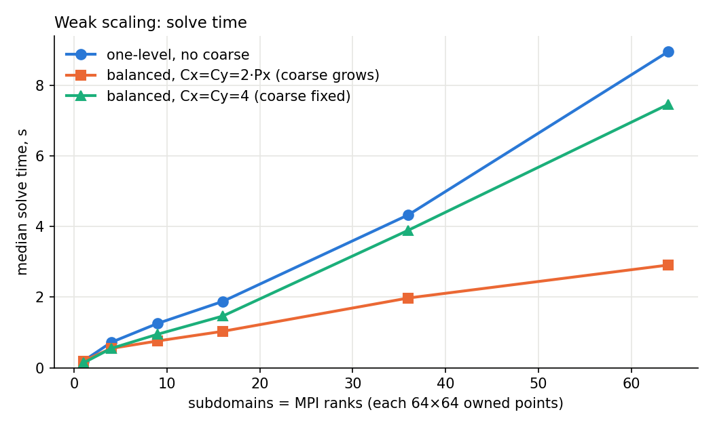
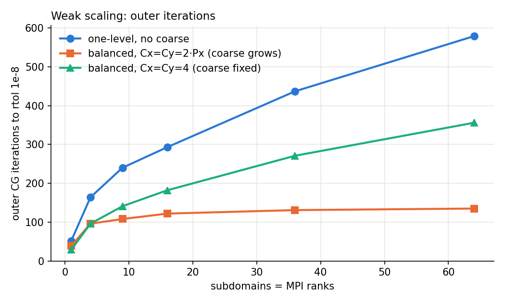
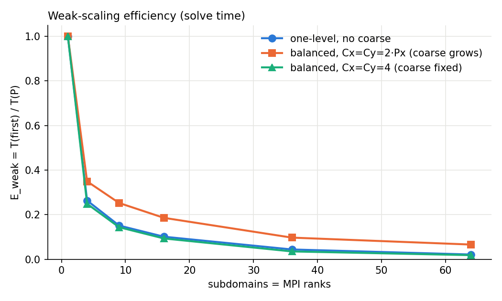
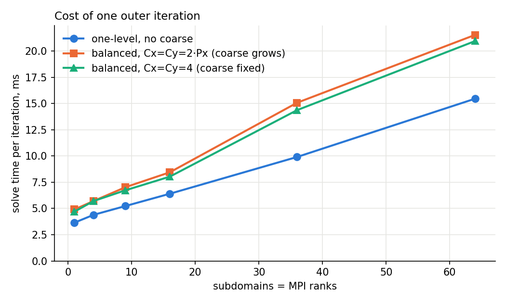
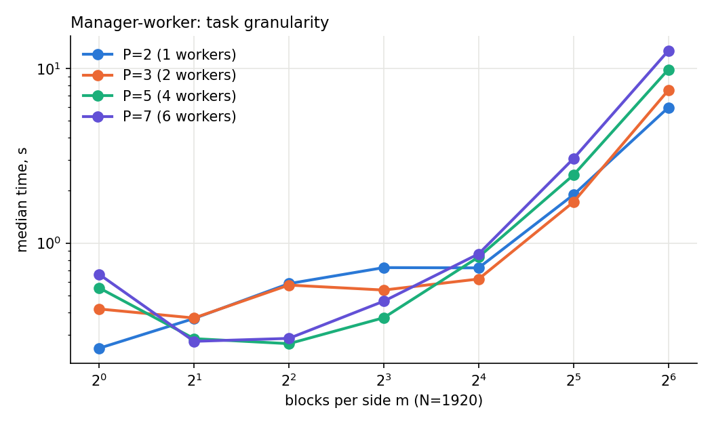
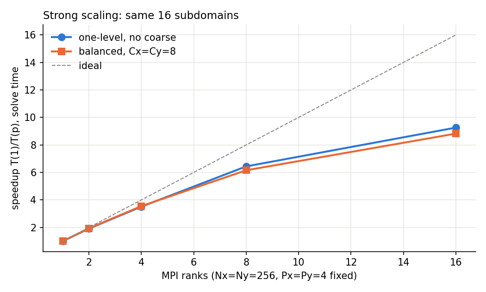
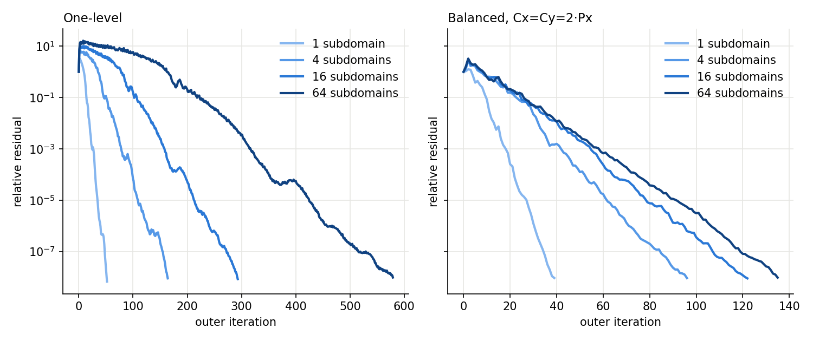

| Exercise 9.1 and Bonus A | Exercises 9.2, 9.3, Bonus B and C | |
|---|---|---|
| Machine | Laptop, Intel Core Ultra 7 265U, Ubuntu under WSL 2 (7 cores × 2 threads visible) | Course server parcomp2026, AMD EPYC 7742 VM, 64 vCPUs |
| Software | Open MPI 5.0.10, Python 3.14.4, mpi4py 4.1.1, NumPy 2.5.3 | DD Schwarz Lab version 0.9.10, native engine, CPU backend. PETSc and OpenCL were not used |
| Threads | OMP_NUM_THREADS=1, OPENBLAS_NUM_THREADS=1 | The Lab fixes BLAS thread counts |
| Repetitions | 1 checked warm-up + 3 timed runs per cell, median | 1 warm-up + 3 timed runs per configuration, median. All 112 jobs converged |
DD_Schwarz_experiments.json in the structure of the Export experiment JSON file, without the stored problem fields, and dd_runs.json is the same data labelled by series for plotting. An earlier pass of the same plan, submitted by a script, gave identical iteration counts and is not used here.solve_seconds as reported by the Lab. Setup is reported separately. Snapshots (Examine the solution) were off.ManagerWorker.py, log in example_output.txt)Run with $P = 2, 4, 7, all exiting with code 0. The manager receives with MPI.ANY_SOURCE and MPI.ANY_TAG, then learns the sender and tag from status.source and status.tag. Arrival order is not fixed: with $P=4$ the replies came back from ranks 2, 1, 3, while with $P=7$ they came back in rank order. So the manager must not assume any order, and my implementation uses the same mechanism.
task9_1.py, manager_worker_AxB(A, B, m), with default $m=5$ because the course test calls it without $m$)None.Probe(source=MPI.ANY_SOURCE, tag=MPI.ANY_TAG, status=status), reads status.Get_source() and status.Get_tag(), and then receives from exactly that rank.| Tag | Direction | Content |
|---|---|---|
| REQUEST=1 | worker → manager | empty int64 buffer |
| TASK=2 | manager → worker | 3 messages: indices $(i,k,j)$ as int64, blocks $A_{ik}$ and $B_{kj}$ as float64 |
| RESULT=3 | worker → manager | 2 messages: indices as int64, block $D$ as float64 |
| STOP=4 | manager → worker | empty int64 buffer |
active reaches 0 every result has been added to $C$. Running out of tasks does not end the manager loop, only the last STOP does.source=worker, and MPI keeps messages from one sender in order.a9_test.py, log in test_output.txt)Each case compares rank 0's result with numpy.matmul(A, B) using numpy.testing.assert_allclose and checks that the other ranks return None. Cases: the course test from the provided a9_test.py ($N = 5P$, $m = 5$, random matrices), known integers, identity on either side, zero matrix, $N=m=1$ and random matrices up to $N=64$, with $m$ from 1 to $N$, including $m=1$ with more workers than tasks. The test file is adapted from the course one. The 25 cases were run on $P = 2, 3, 4, 7$: 100 passed, 0 failed, and every run exited with code 0, so no worker was left waiting.
Set after one 64×64 pilot run and before the measurement campaign. With a constant 64×64 owned grid per subdomain and one rank per subdomain, one-level ASM should need more outer iterations as the subdomain count grows, because a local correction moves information only as far as its neighbours. So solve time will not stay constant. A balanced coarse correction whose size grows with the subdomain count should keep iterations much flatter, at the price of extra setup and coarse work. A coarse space of fixed size should lose this benefit as the grid grows.
Times are medians of 3 runs. E_weak uses solve time relative to the same series at 1 subdomain. "Local" and "Coarse" are the Lab's local_seconds and coarse_seconds, maximum over ranks. The Lab does not report communication separately.
| Series | Px×Py | Nx×Ny | Unknowns | Ranks | Coarse dim | Iterations | Final rel. residual (worst rep) | Status | Reps | Setup, s | Solve, s (min..max) | Local, s | Coarse, s | Solve/iter, ms | E_weak |
|---|---|---|---|---|---|---|---|---|---|---|---|---|---|---|---|
| one-level | 1×1 | 64×64 | 4096 | 1 | 0 | 52 | 6.72e-9 | converged | 3 | 0.115 | 0.190 (0.188..0.194) | 0.146 | 0.000 | 3.65 | 1.000 |
| one-level | 2×2 | 128×128 | 16384 | 4 | 0 | 164 | 9.01e-9 | converged | 3 | 0.135 | 0.720 (0.715..0.733) | 0.537 | 0.000 | 4.39 | 0.263 |
| one-level | 3×3 | 192×192 | 36864 | 9 | 0 | 240 | 9.72e-9 | converged | 3 | 0.156 | 1.255 (1.239..1.265) | 0.911 | 0.000 | 5.23 | 0.151 |
| one-level | 4×4 | 256×256 | 65536 | 16 | 0 | 293 | 8.44e-9 | converged | 3 | 0.174 | 1.876 (1.841..1.917) | 1.301 | 0.000 | 6.40 | 0.101 |
| one-level | 6×6 | 384×384 | 147456 | 36 | 0 | 437 | 8.46e-9 | converged | 3 | 0.261 | 4.329 (4.040..4.588) | 2.832 | 0.000 | 9.91 | 0.044 |
| one-level | 8×8 | 512×512 | 262144 | 64 | 0 | 579 | 9.77e-9 | converged | 3 | 0.365 | 8.951 (8.789..9.265) | 5.603 | 0.000 | 15.46 | 0.021 |
| balanced, C=2·Px | 1×1 | 64×64 | 4096 | 1 | 4 | 39 | 9.31e-9 | converged | 3 | 0.126 | 0.191 (0.188..0.193) | 0.115 | 0.013 | 4.91 | 1.000 |
| balanced, C=2·Px | 2×2 | 128×128 | 16384 | 4 | 16 | 96 | 9.25e-9 | converged | 3 | 0.150 | 0.548 (0.544..0.558) | 0.315 | 0.046 | 5.71 | 0.349 |
| balanced, C=2·Px | 3×3 | 192×192 | 36864 | 9 | 36 | 108 | 9.05e-9 | converged | 3 | 0.182 | 0.758 (0.730..0.803) | 0.426 | 0.064 | 7.02 | 0.252 |
| balanced, C=2·Px | 4×4 | 256×256 | 65536 | 16 | 64 | 122 | 9.01e-9 | converged | 3 | 0.242 | 1.031 (0.981..1.236) | 0.541 | 0.093 | 8.45 | 0.186 |
| balanced, C=2·Px | 6×6 | 384×384 | 147456 | 36 | 144 | 131 | 9.08e-9 | converged | 3 | 0.567 | 1.974 (1.968..1.988) | 0.964 | 0.180 | 15.07 | 0.097 |
| balanced, C=2·Px | 8×8 | 512×512 | 262144 | 64 | 256 | 135 | 9.62e-9 | converged | 3 | 1.114 | 2.908 (2.896..2.912) | 1.300 | 0.256 | 21.54 | 0.066 |
| balanced, C=4 | 1×1 | 64×64 | 4096 | 1 | 16 | 29 | 8.35e-9 | converged | 3 | 0.132 | 0.136 (0.136..0.149) | 0.081 | 0.010 | 4.70 | 1.000 |
| balanced, C=4 | 2×2 | 128×128 | 16384 | 4 | 16 | 96 | 9.25e-9 | converged | 3 | 0.152 | 0.548 (0.541..0.605) | 0.317 | 0.047 | 5.71 | 0.249 |
| balanced, C=4 | 3×3 | 192×192 | 36864 | 9 | 16 | 141 | 7.39e-9 | converged | 3 | 0.162 | 0.949 (0.942..1.084) | 0.530 | 0.076 | 6.73 | 0.144 |
| balanced, C=4 | 4×4 | 256×256 | 65536 | 16 | 16 | 182 | 9.99e-9 | converged | 3 | 0.177 | 1.462 (1.460..1.467) | 0.785 | 0.109 | 8.03 | 0.093 |
| balanced, C=4 | 6×6 | 384×384 | 147456 | 36 | 16 | 271 | 9.37e-9 | converged | 3 | 0.289 | 3.893 (3.693..3.924) | 1.936 | 0.287 | 14.37 | 0.035 |
| balanced, C=4 | 8×8 | 512×512 | 262144 | 64 | 16 | 356 | 9.39e-9 | converged | 3 | 0.410 | 7.458 (7.404..7.779) | 3.395 | 0.582 | 20.95 | 0.018 |




local_seconds is 5.60 s of the 8.95 s solve. With growing coarse: local 1.30 s, coarse 0.26 s, and the remaining 1.35 s of the 2.91 s solve is not attributed by the Lab. Setup is small except with growing coarse, where it rose from 0.13 s to 1.11 s. Even so, setup + solve at 64 subdomains is 4.02 s, against 9.32 s one-level and 7.87 s with fixed coarse.Ax, neighbour exchange, global reductions and true-residual monitoring, but the Lab does not separate them, so I cannot say how much of it is communication. The explanation of iteration growth (information travels about one subdomain per iteration, and a coarse space shortcuts this) fits the data but is not proven by it.Conclusion: the hypothesis held for iterations: one-level iterations grow roughly linearly in $P_x$, a growing coarse space nearly stops this, and a fixed one does not. It did not anticipate the growth in cost per iteration: even with near-flat iterations, that cost rose about 4.4× with growing coarse, so on this VM solve time is far from constant for all three series.
Question: how does the iteration count change with subdomain count, with and without a coarse solver? Hypothesis: as in 9.2, Part A. Changed parameter: coarse correction only, using the same problem and runs as 9.2. Comparison graph: plots/weak_iterations.png above.
| Subdomains | 1 | 4 | 9 | 16 | 36 | 64 |
|---|---|---|---|---|---|---|
| One-level | 52 | 164 | 240 | 293 | 437 | 579 |
| Balanced, $C = 2 P_x$ | 39 | 96 | 108 | 122 | 131 | 135 |
| Balanced, $C = 4$ | 29 | 96 | 141 | 182 | 271 | 356 |
Conclusion: at 64 subdomains the growing coarse space cuts iterations 4.3× compared with one-level, and setup + solve 2.3×. Fixed $C=4$ cuts iterations only 1.6×, so here the coarse space has to grow with the subdomain count.
Confounders: the two coarse series differ in coarse size, and within a series the global size changes along with the subdomain count. Each balanced iteration also costs more than a one-level one (21.5 vs 15.5 ms at 64 subdomains), so iterations alone overstate the time gain. Only $H=1$ was tested: the Lab's geometric coarse functions may help less with a high-contrast channel, as Lesson 7 warns.
Option chosen: compare block counts $m$ with $N=1920$ fixed (task9_bonus_a.py, results_9_1.csv). Laptop, median of 3 runs, warm-up result checked against A @ B. Only the multiplication call is timed.
| m | Block n | Tasks | Payload, MB | P=2, s | P=3, s | P=5, s | P=7, s |
|---|---|---|---|---|---|---|---|
| 1 | 1920 | 1 | 88.5 | 0.250 | 0.420 | 0.554 | 0.663 |
| 2 | 960 | 8 | 176.9 | 0.370 | 0.373 | 0.284 | 0.274 |
| 4 | 480 | 64 | 353.9 | 0.586 | 0.575 | 0.266 | 0.285 |
| 8 | 240 | 512 | 707.8 | 0.724 | 0.539 | 0.374 | 0.465 |
| 16 | 120 | 4096 | 1415.6 | 0.722 | 0.623 | 0.832 | 0.868 |
| 32 | 60 | 32768 | 2831.2 | 1.890 | 1.718 | 2.452 | 3.043 |
| 64 | 30 | 262144 | 5662.3 | 5.964 | 7.491 | 9.845 | 12.602 |

Same settings as 9.2, with $N_x=N_y=256$ and $P_x=P_y=4$ fixed, varying only the MPI ranks. These are real separate MPI processes. Subdomains go round-robin to ranks, so with fewer than 16 ranks each rank handles several.
| Series | Ranks | Iterations | Status | Setup, s | Solve, s (min..max) | Speedup (solve) | Efficiency |
|---|---|---|---|---|---|---|---|
| one-level | 1 | 293 | converged | 2.066 | 16.790 (16.649..17.215) | 1.00 | 1.00 |
| one-level | 2 | 293 | converged | 1.078 | 8.778 (8.726..8.836) | 1.91 | 0.96 |
| one-level | 4 | 293 | converged | 0.572 | 4.785 (4.545..4.878) | 3.51 | 0.88 |
| one-level | 8 | 293 | converged | 0.301 | 2.608 (2.579..2.705) | 6.44 | 0.80 |
| one-level | 16 | 293 | converged | 0.176 | 1.814 (1.796..1.886) | 9.26 | 0.58 |
| balanced, C=8 | 1 | 122 | converged | 2.543 | 8.558 (8.326..8.727) | 1.00 | 1.00 |
| balanced, C=8 | 2 | 122 | converged | 1.288 | 4.422 (4.358..4.430) | 1.94 | 0.97 |
| balanced, C=8 | 4 | 122 | converged | 0.689 | 2.411 (2.406..2.564) | 3.55 | 0.89 |
| balanced, C=8 | 8 | 122 | converged | 0.388 | 1.390 (1.364..1.551) | 6.16 | 0.77 |
| balanced, C=8 | 16 | 122 | converged | 0.242 | 0.970 (0.955..1.009) | 8.82 | 0.55 |

